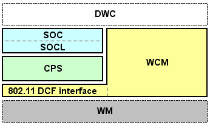

Supports NITRO-SDK Wi-Fi Library 1.1 Release Version
Confidential
This document contains proprietary information. Please take strict measures to keep this information secret.
©2006 Nintendo Co.,Ltd. All rights reserved.
Microsoft Internet Explorer 5.0/Netscape 6.0 or later versions are recommended.
Use of the NITRO-SDK Wi-Fi Library allows Internet access by using Nintendo DS wireless communication (infrastructure mode).
The following limitations apply to the NITRO-SDK Wi-Fi Library.
NITROWIFI_ROOT environment variable.
Internally, the NITRO-SDK Wi-Fi Library is made up of the hierarchical structure shown below.

Currently, the following prefixes are reserved for the NITRO-SDK Wi-Fi Library. Therefore, in applications, do not use functions and variables that start with the following names:
| WCM | Wireless connection library prefix |
| CPS | TCP/IP protocol stack prefix |
| SOC SOCL |
Socket library prefix |
Place the following header file in an include statement in the program's source code.
#include <nitroWiFi.h>
so2soc.h and iw2wcm.h are placed in the include statement by default. These headers are wrappers that redefine the API definition of the library on NITRO-INET to be used with the NITRO-SDK Wi-Fi Library. Even if you have developed applications using NITRO-INET, these wrappers allow you to easily replace just the libraries.
include $(NITROWIFI_ROOT)/build/buildtools/commondefs
include $(NITROWIFI_ROOT)/build/buildtools/modulerules
$(NITROWIFI_ROOT)/build/demos/shared/ap_info.c